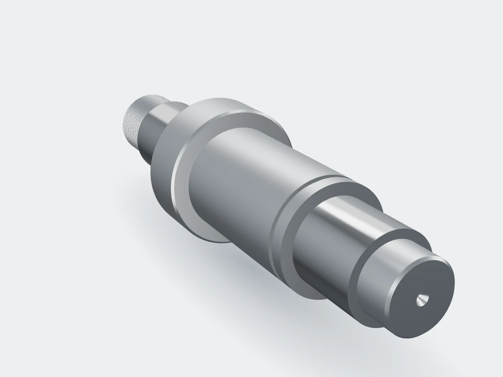

Otočte tažením
Hřídele čerpadel v opakovaných sériích
Výrobce průmyslových čerpadel, Brno, od roku 2019
Hřídel soustružíme z tyče, závit M30 × 2 válcujeme a po kalení u partnera brousíme ložiskové čepy na k6. Vyrábíme podle odvolávek po stovkách kusů. Zákazník nedrží sklad a dávku má do tří týdnů.
- Materiál
- 42CrMo4, kaleno
- Ložiskové čepy
- Ø 35 k6
- Objem
- 1 200 kusů ročně
- Dodání dávky
- 15 pracovních dní